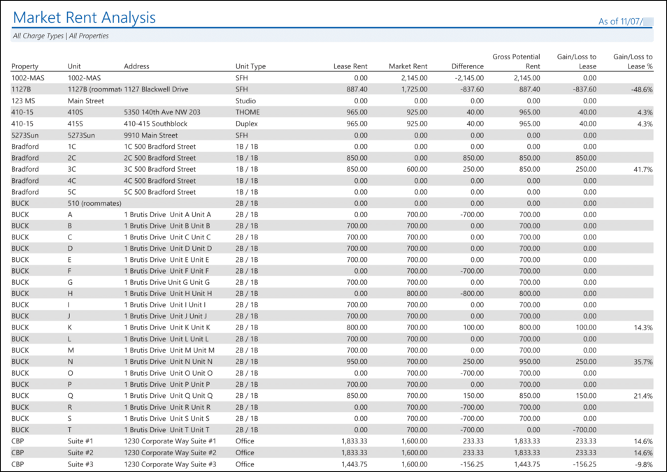
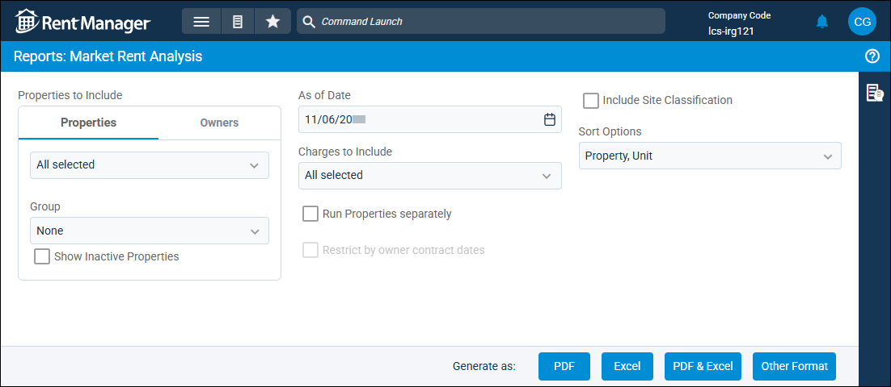
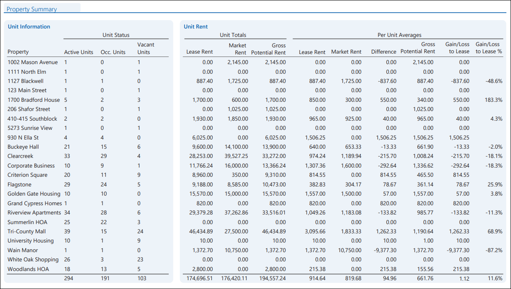

Source: https://rmxhelp.rentmanager.com/Topics/Express/Other/Reports/Market-Rent-Analysis.htm
Market Rent Analysis (Report)
The Market Rent Analysis report examines the difference between actual rent being collected and the market rent for each unit at a selection of properties, giving you the gross potential rent (GPR) for each unit. When their financial property is selected in the report options, rentable assets are included in this report. The results can include any information even if it started prior to the general ledger (GL) start date since this report does not consider the GL start date. This allows you to track lost profits based on the amounts that are being charged to tenants through their leases. In addition, statistics for GPR based on property, asset type, and unit type averages are provided through sub-reports, allowing you to further investigate where profits are being made or lost. For more information, refer to Post Gross Potential Rent (GPR).
More Information
The Market Rent Analysis report always makes calculations based on lease and market rent values for the first day of the month selected in the report options. For this reason, the report is best generated for a future date in order to provide GPR previews for an upcoming month.
Related Privileges
| Group | Privilege | Column |
|---|---|---|
| Letter/Email Templates/Reports/Packets | Run reports | Enabled |
Additionally, on the Reports tab, you must have access to Market Rent Analysis.
For more information, refer to Control User Access.
To view the Market Rent Analysis report, do the following:
-
Go to
 arrow_forward Receivables arrow_forward Rent Roll arrow_forward Market Rent Analysis.
arrow_forward Receivables arrow_forward Rent Roll arrow_forward Market Rent Analysis.
The Reports: Market Rent Analysis page displays. -
Adjust the report options as desired. Each option is described below.
-
Generate the report in your desired file format(s).
Related Preferences
Reports may look different depending on whether or not the Use modernized report style system preference is enabled. For more information, refer to General Report Options (System Preferences).

Report Options
The report options described below determine what data displays in the report.

Properties/Owners to Include
Check each property or owner to be included in the report. Alternatively, select a property or owner Group. When the Owners tab is selected, results generate only for owners with active ownerships. If all selected owners currently do not have active ownerships, and Restrict by owner contract dates is selected, an error message displays stating that no reports were generated. For more information on establishing active ownerships, refer to Property Owners (Pop-Up).
More Information
Only information related to the properties to which you have access displays. Your access to properties can be managed from your user account or on the property's details page. For more information, refer to Limit Access to a Property.
Optionally, check Show Inactive Properties to include properties that are no longer active.
More Information
Properties with the Property Type of RV / Campground or Short Term Rental do not display in this report. Short term rental property information is available in reports organized in the Short Term Rentals report category.
As of Date
Rent Manager examines relevant report information as of (up through) the date entered to determine the data that displays in the report.
Charges to Include
To calculate the Lease Rent for each unit, the report displays totals for all recurring charges inherited by tenant accounts using the selected charge types.
More Information
To ensure that the Market Rent Analysis report results correspond with gross potential rent (GPR) calculations, the report is best generated for the charge types defined as Rent Charge Types on each property. For more information, refer to Post Gross Potential Rent (GPR).
Run Properties Separately
Check to generate a separate report for each selected property. Otherwise, all selected properties are combined into a single report.
This option is only selectable only when the Properties to Include section displays the Property tab.

Restrict by Owner Contract Dates
This option becomes available when the Owner tab is selected.

Check to display only data that is within the active contract dates for each of the selected owners, regardless of the date. This option is useful if, for example, your contract with one owner is ending and another contract with a different owner is beginning.
| Option | Description |
|---|---|
|
Checked |
The report filters to display only data within the selected owner or owners' active contract. For example, if the report is generated for 12/31/2026, and Owner A has an active contract from January to June of 2026, the report displays only data at the properties owned by Owner A from January 2026 to June 2026. |
|
Unchecked |
The report displays current data for any months included in the report date range regardless of owner contracts. |
Sort Options
Select one of the following options to determine how the report results are sorted:
| Option | Description |
|---|---|
|
Market Rent |
Units and rentable assets are first sorted numerically by their Market Rent amount in ascending order (lowest to highest). Units and assets with the same market rent are further sorted alphanumerically by the unit or asset Name. |
|
Property, Unit |
Units and rentable assets are first sorted alphanumerically by Property name. Units and assets at the same property are further sorted alphanumerically by the unit or asset Name. |
|
Site Classification |
Units and rentable assets are sorted alphanumerically by Site Classification name. This option displays only if the Include Site Classification report option is enabled. |
|
Unit |
Units and rentable assets are first sorted alphanumerically by Unit name. Units and assets with the same name are further sorted alphanumerically by Property name. |
|
Unit Type, Unit |
Units and rentable assets are first sorted alphanumerically by Unit Type or Asset Type name. Units and assets of the same type are further sorted alphanumerically by Name. |
Include Site Classification
Check to display the Site Classification column, which displays the short name of each unit's site classification. This option is accessible only when at least one manufactured housing–type property (or an owner who owns a manufactured housing–type property during the entered date range) is selected.
The site classification that displays is based on the date selected in the As of Date section.
Report Results
The report results are described below including, if applicable, section, column, and subreport descriptions.
Report Header
The report header displays the report name and key information selected in the report options, such as date information and which properties were examined in the report.
Column Descriptions
The columns that display in the report are described below.
| Column | Description |
|---|---|
|
Address |
The street address of the Address marked as Default on the unit's details page. Assets display the street address of the Address marked as Default on the unit's details page to which the asset is assigned to. |
|
Difference |
The amount gained or lost due to the difference between the Lease Rent and Market Rent, calculated using the following formula: Difference = Lease Rent - Market Rent |
|
Gain/Loss to Lease |
The amount of profits being made or lost for each unit or asset due to the terms of the tenant's lease. For occupied units, the Difference displays. Vacant units display 0.00 since there is no lease for that unit. |
|
Gain/Loss to Lease % |
The profits as a percentage of market rent being made or lost for each unit or asset due to the terms of the tenant's lease, calculated using the following formula: Gain/Loss to Lease % = Gain/Loss to Lease / Market Rent Vacant units and assets do not display a percentage since they are not being leased. |
|
Gross Potential Rent |
The amount of rent that could possibly be collected as a result of a lease at this unit or asset. For occupied units and assets, the Lease Rent displays. Vacant units and assets display the Market Rent. The sum of the gross potential rent for all units and assets in the report displays at the bottom of the column.
More Information If a tenant moves out in the middle of the month for which the report is generated, this column is calculated using the following formula: Gross Potential Rent = [(Market Rent / Number of Days Tenant Occupied) - (Difference / Days in the Month)] * Number of Days Tenant Occupied |
|
Lease Rent |
The total amount of recurring charges using the selected Charges to Include inherited by the tenant(s) leasing each unit or asset as of the first day of the month in the selected As of Date. Vacant units display 0.00. The sum of all inherited recurring charges for tenants leasing at the units in the report displays at the bottom of the column. |
|
Market Rent |
The current market rent amount for each unit or asset that is active as of the first day of the month in the selected As of Date. The sum of the market rent amounts for all units and assets in the report displays at the bottom of the column. |
|
Property |
The Short Name of each property included in the report. |
|
Site Classification |
This system-derived status indicates the operational state of manufactured housing sites based on the presence of an RV on the lease or home-type asset at the unit location, homeowner status, occupancy, leases in a rent-free period, and unit status. For more information, refer to Site Classification. This column only displays for properties with a Property Type of Manufactured Housing and when Include Site Classification is enabled in report options. |
|
Unit |
The Name of each unit or asset included in the report. |
|
Unit Type |
The Unit Type or Asset Type selected on the unit or asset's details page. |
Summary Subreports
The Property Summary and Unit Type Summary subreports display at the end of the report regardless of the report options selected. The Site Classification Summary subreport displays if the Include Site Classification report option is selected. These subreports display information about the units, assets, total amounts for lease rent, market rent, and GPR, as well as per-unit (including assets, if applicable) averages for those amounts.

This information is organized into columns, which are described in the table below. Each subreport sorts this information in groups based on the subreport type (i.e., property, unit type, and site classification).
More Information
All Market Rent totals used in the subreport are based on the values that are active as of the first day of the As of Date month on unit market rent. For more information, refer to Unit Market Rent (Pop-Up).
| Column | Description |
|---|---|
|
Property Name |
The Full Name of each property included in the report results. This displays only on the Property Summary subreport. |
|
Site Classification |
The short name of each site classification included in the report results. This displays only on the Site Classification Summary subreport. |
|
Unit Type Name |
The name of each unit or asset type included in the report results. This displays only on the Unit Type Summary subreport. |
|
Unit Status |
Description |
|
Active Units |
The number of active units and assets included in the report results. |
|
Occ. Units |
The number of units and assets that are occupied as of the first day of the month in the selected As of Date. |
|
Vacant Units |
The number of units and assets that are vacant as of the first day of the month in the selected As of Date. |
|
Unit Totals |
Description |
|
Gross Potential Rent |
The sum of the gross potential rent amounts for the units and assets in the report. |
|
Lease Rent |
The sum of all inherited recurring charges for tenants leasing at the units and assets in the report. |
|
Market Rent |
The sum of the market rent amounts for the units and assets in the report. |
|
Per Unit Averages |
Description |
|
Difference |
The difference between the average lease rent and average market rent for the occupied units and assets in the report, calculated using the following formula: Difference (Per Unit Avg) = Lease Rent (Per Unit Avg) - Market Rent (Per Unit Avg) |
|
Gain/Loss to Lease |
The average amount of profits gained or lost due to the terms of tenant leases at each occupied unit or asset in the report, calculated using the following formula: Gain/Loss to Lease (Per Unit Avg) = Gain/Loss to Lease column total / Active Units |
|
Gain/Loss to Lease % |
The average profits as a percentage of market rent being made or lost due to the terms of tenant leases at each occupied unit or asset in the report, calculated using the following formula: Gain/Loss to Lease (Per Unit Avg) = Gain/Loss to Lease (Per Unit Avg) / Market Rent (Per Unit Avg) |
|
Gross Potential Rent |
The average gross potential rent (GPR) for the units and assets in the report, calculated using the following formula: Gross Potential Rent (Per Unit Avg) = Gross Potential Rent (Unit Total) / Active Units |
|
Lease Rent |
The average amount collected through inherited recurring charges for tenants occupying the units and assets in the report, calculated using the following formula: Lease Rent (Per Unit Avg) = Lease Rent (Unit Total) / Occ. Units |
|
Market Rent |
The average market rent amount for the occupied units and assets in the report, calculated using the following formula: Market Rent (Per Unit Avg) = [Market Rent (Unit Total) - (Vacant Unit Market Rent Total)] / Active Units |